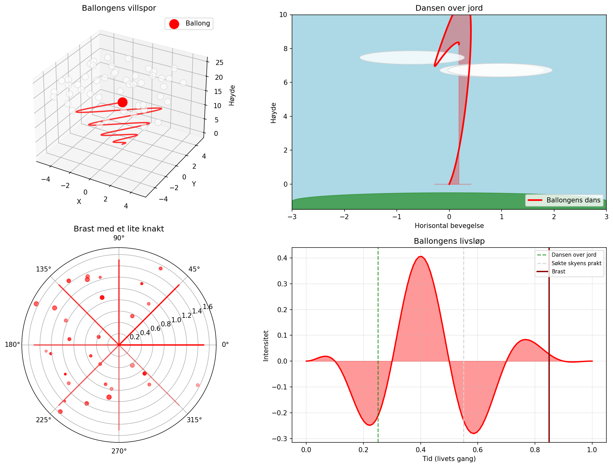

En rød ballong på villspor, danset lett over jord. Den søkte skyens hvite prakt, før den brast med et lite knakt.

import numpy as np
import matplotlib.pyplot as plt
from mpl_toolkits.mplot3d import Axes3D
from matplotlib.patches import Circle, Ellipse
import matplotlib.patches as mpatches
fig = plt.figure(figsize=(14, 10))
# Hovedplot: Ballongens villspor (3D bane)
ax1 = fig.add_subplot(221, projection='3d')
t = np.linspace(0, 4*np.pi, 500)
# Villsporet - en uforutsigbar bane
x = t * np.sin(t) * np.cos(t) / 2
y = t * np.cos(t) * np.sin(t) / 2
z = t**1.5 / 3
ax1.plot(x, y, z, 'r-', linewidth=2, alpha=0.8)
ax1.scatter([x[-1]], [y[-1]], [z[-1]], c='red', s=200, marker='o', label='Ballong')
# Skyene (hvite punkter i bakgrunnen)
np.random.seed(42)
sky_x = np.random.uniform(-5, 5, 50)
sky_y = np.random.uniform(-5, 5, 50)
sky_z = np.random.uniform(15, 25, 50)
ax1.scatter(sky_x, sky_y, sky_z, c='white', s=100, alpha=0.6, edgecolors='lightgray')
ax1.set_xlabel('X')
ax1.set_ylabel('Y')
ax1.set_zlabel('Høyde')
ax1.set_title('Ballongens villspor')
ax1.legend()
# Plot 2: Ballongen som stiger mot skyene
ax2 = fig.add_subplot(222)
t2d = np.linspace(0, 10, 200)
ballong_hoyde = 1 - np.exp(-t2d/3) * np.cos(t2d)
ballong_bane = 0.5 * np.sin(t2d * 0.8) * np.exp(-t2d/10)
ax2.plot(ballong_bane, ballong_hoyde * 8, 'r-', linewidth=2.5, label='Ballongens dans')
ax2.fill_between(ballong_bane, ballong_hoyde * 8, alpha=0.3, color='red')
# Skyer
for i in range(3):
ellipse = Ellipse((np.random.uniform(-1, 1), np.random.uniform(6, 9)),
width=2, height=0.8, color='white', ec='lightgray', alpha=0.8)
ax2.add_patch(ellipse)
# Jord
theta = np.linspace(0, np.pi, 100)
ax2.fill_between(np.cos(theta) * 3, np.sin(theta) * 0.5 - 1, -1.5, color='forestgreen', alpha=0.7)
ax2.set_xlim(-3, 3)
ax2.set_ylim(-1.5, 10)
ax2.set_xlabel('Horisontal bevegelse')
ax2.set_ylabel('Høyde')
ax2.set_title('Dansen over jord')
ax2.legend(loc='lower right')
ax2.set_facecolor('lightblue')
# Plot 3: Eksplosjonen - polarkoordinater
ax3 = fig.add_subplot(223, projection='polar')
r = np.linspace(0, 2, 100)
theta_explosion = np.linspace(0, 2*np.pi, 100)
# Selve eksplosjonen
for i in range(8):
vinkel = i * np.pi / 4
ax3.plot([vinkel, vinkel], [0, 1.5], 'r-', linewidth=2, alpha=1 - i*0.1)
# Fragmenter fra eksplosjonen
np.random.seed(123)
for _ in range(30):
v = np.random.uniform(0, 2*np.pi)
r_frag = np.random.uniform(0.3, 1.8)
ax3.scatter(v, r_frag, c='red', s=np.random.uniform(10, 50), alpha=np.random.uniform(0.3, 0.9))
ax3.set_title('Brast med et lite knakt', fontsize=12)
# Plot 4: Livsløpet til ballongen
ax4 = fig.add_subplot(224)
tid = np.linspace(0, 1, 100)
# Ballongens livskurve
liv = np.sin(tid * np.pi)**2 * np.exp(-tid * 2) * np.cos(tid * 5 * np.pi)
# Fyll under kurven
ax4.fill_between(tid, liv, alpha=0.4, color='red')
ax4.plot(tid, liv, 'r-', linewidth=2)
# Markering av viktige punkter
ax4.axvline(x=0.25, color='green', linestyle='--', alpha=0.7, label='Dansen over jord')
ax4.axvline(x=0.55, color='lightgray', linestyle='--', alpha=0.9, label='Søkte skyens prakt')
ax4.axvline(x=0.85, color='darkred', linestyle='-', linewidth=2, label='Brast')
ax4.set_xlabel('Tid (livets gang)')
ax4.set_ylabel('Intensitet')
ax4.set_title('Ballongens livsløp')
ax4.legend(loc='upper right', fontsize=8)
ax4.grid(True, alpha=0.3)
plt.tight_layout()
plt.savefig(output_path, dpi=150, bbox_inches='tight', facecolor='white')execution_ok=True fallback_used=False image_ok=True